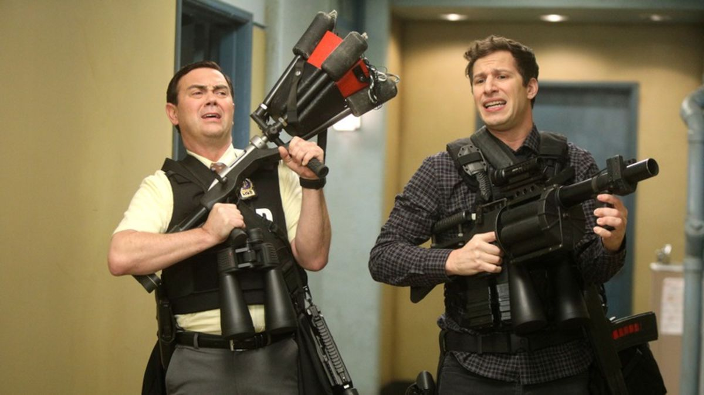
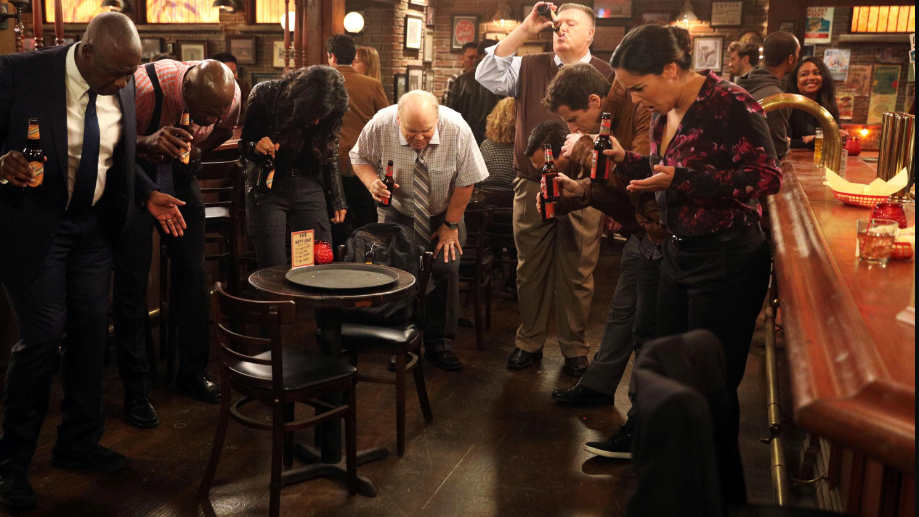

December 14, 2020 // Tags: B99 || Reviews
The Last Ride
Brookyln Nine-Nine somehow managed to predict its own fate and shows exactly how powerful the collective unity of a community can become.

The Last Ride was the fifteenth episode of the fourth season, premiering on April 25, 2017, and the "Inner Circle" of the 99th precinct finds out that they would most likely be shut down. As their last hurrah, the team scrambles to spend what could be their last day together as earnestly and sweetly as possible. Rosa helps Terry compete with Hitchcock for the title of "Mr. Nine Nine," given to the detective who solved the most cases. Holt and Amy cram what was supposed to be a nine-year mentorship into a few measly hours. And Jake and Charles take on the last case given to the Nine-Nine, a series of bike robberies. Throughout the episode, Gina, hoping to entertain her fanbase, documents the happenings of the precinct and tricks everyone into drinking cement.
Despite Hitchcock's longevity, Rosa notes that Terry truly deserves the title of "Mr. Nine Nine," having helped everyone in the precinct solve their own cases. Amy and Holt rush through the essential information—acceptable fabrics (cotton and cotton blends—wool is for outerwear only, and silk is for sex workers or musicians), good deserts (none—if you were hungry, you should've eaten more dinner), and proper sleeping positions (on back, toes up, hands crossed or at sides). Jake and Charles, equipped with matching leather jackets and bunches of hi-tech gadgets, realize that their bike thief is apart of a major heroin drug ring. Instead of using their limited time to save the Nine-Nine, they decide to be good cops and do the right thing instead of the selfish thing.
As the time ticks down to the final moments, Holt gives an emotional speech, thanking the precinct for the work that they've done and the good work he knows that they will continue to do. However, with Gina's impressive online presence, she records his speech and posts it for her fans to see. The G-Hive end up banding together to save the Nine-Nine, calling the commissioner to keep the precinct open. The Nine-Nine is saved. Fast forward a year. On May 10, 2018, Fox announced that it was canceling Brooklyn Nine-Nine, prompting rapid outcries from fans.
Quite obviously, the show isn't canceled, seeing how it is currently returning for its eighth season. Just 31 hours after the news hit, the show was rescued by NBC.
While NBC stated that they were eager to reclaim the show after they regrettably decided to sell it to FOX in the first place, it is important to note the crucial role that the fanbase and the community played in the show's revival. #SaveB99 was trending on both Instagram and Twitter, with fans posting gifs and clips from the show and pleading others to stream episodes of the show. Celebrities like Lin-Manuel Miranda, Mark Hamill, and Guillermo del Toro also demonstrated their support on social media. Petitions were created calling for the cancellation's reversal, one of which collected a little under 40,000 signatures. In the end, it was really the fans that pulled through, presenting their loyalty and dedication to the show and the impact that a measly television show can have on an entire community.
If this sounds familiar, that's because it is. Just like the episode The Last Ride, the community came together to show their support and was able to save a beloved institution of their, well, community. While Brookyln Nine-Nine predicting their own fate almost a year ahead is just a unique and interesting coincidence, it is an impressive testament of the power of the community and the strength of people when they come together as a whole.